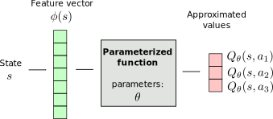
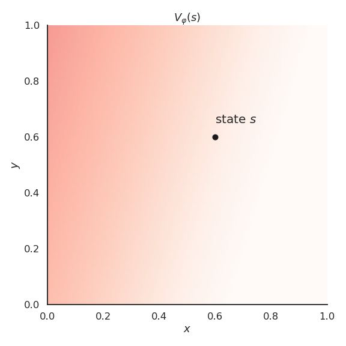

Deep Reinforcement Learning
Function approximation
Tabular reinforcement learning
All the methods seen so far belong to tabular RL.
Q-learning necessitates to store in a Q-table one Q-value per state-action pair (s, a).

Tabular reinforcement learning
- If a state has never been visited during learning, the Q-values will still be at their initial value (0.0), no policy can be derived.

- Similar states likely have the same optimal action: we want to be able to generalize the policy between states.
Tabular RL cannot learn to play video games

Continuous action spaces
Tabular RL only works for small discrete action spaces.
Robots have continuous action spaces, where the actions are changes in joint angles or torques.
A joint angle could take any value in [0, \pi].

Continuous action spaces
- A solution would be to discretize the action space (one action per degree), but we would fall into the curse of dimensionality.

The more degrees of freedom, the more discrete actions, the more entries in the Q-table…
Tabular RL cannot deal with continuous action spaces, unless we approximate the policy with an actor-critic architecture.
Feature vectors

Let’s represent a state s by a vector of d features \phi(s) = [\phi_1(s), \phi_2(s), \ldots, \phi_d(s)]^T.
For the cartpole, the feature vector would be:
\phi(s) = \begin{bmatrix}x \\ \dot{x} \\ \theta \\ \dot{\theta} \end{bmatrix}
x is the position, \theta the angle, \dot{x} and \dot{\theta} their derivatives.
We are able to represent any state s using these four variables.
Linear approximation of state value functions
- The simplest function approximator (FA) is the linear approximator.

- The approximated value is a linear combination of the features:
V_\varphi(s) = \sum_{i=1}^d w_i \, \phi_i(s) = \mathbf{w}^T \times \phi(s)
The weight vector \mathbf{w} = [w_1, w_2, \ldots, w_d]^Tis the set of parameters \varphi of the function.
A linear approximator is a single artificial neuron (linear regression) without a bias.
Learning the state value approximation
Regardless the form of the function approximator, we want to find the parameters \varphi making the approximated values V_\varphi(s) as close as possible from the true values V^\pi(s) for all states s.
- This is a regression problem.
- We want to minimize the mean square error between the two quantities:
\min_\varphi \mathcal{L}(\varphi) = \mathbb{E}_{s \in \mathcal{S}} [ (V^\pi(s) - V_\varphi(s))^2]
- The loss function \mathcal{L}(\varphi) is minimal when the predicted values are close to the true ones on average for all states.
Linear approximation
- The approximated value is a linear combination of the features:
V_\varphi(s) = \sum_{i=1}^d w_i \, \phi_i(s) = \mathbf{w}^T \times \phi(s)
- The weights are updated using stochastic gradient descent:
\Delta \mathbf{w} = \eta \, (V^\pi(s) - V_\varphi(s)) \, \phi(s)
- This is the delta learning rule of linear regression and classification, with \phi(s) being the input vector and V^\pi(s) - V_\varphi(s) the prediction error.
Function approximation for Q-values
Q-values can be approximated by a parameterized function Q_\theta(s, a) in the same manner.
There are basically two options for the structure of the function approximator:
- The FA takes a feature vector for both the state s and the action a (which can be continuous) as inputs, and outputs a single Q-value Q_\theta(s ,a).

- The FA takes a feature vector for the state s as input, and outputs one Q-value Q_\theta(s ,a) per possible action (the action space must be discrete).

- In both cases, we minimize the mse between the true value Q^\pi(s, a) and the approximated value Q_\theta(s, a).
Feature construction
- Before we dive into deep RL (i.e. RL with non-linear FA), let’s see how we can design good feature vectors for linear function approximation.

The problem with deep NN is that they need a lot of samples to converge, what worsens the fundamental problem of RL: sample efficiency.
By engineering the right features, we could use linear approximators, which converge much faster.
The convergence of linear FA is guaranteed, not (always) non-linear ones.
Why do we need to choose features?
- For the cartpole, the feature vector \phi(s) could be:
\phi(s) = \begin{bmatrix}x \\ \dot{x} \\ \theta \\ \dot{\theta} \end{bmatrix}
x is the position, \theta the angle, \dot{x} and \dot{\theta} their derivatives.
Can we predict the value of a state linearly?
V_\varphi(s) = \sum_{i=1}^d w_i \, \phi_i(s) = \mathbf{w}^T \times \phi(s)
No, a high angular velocity \dot{\theta} is good when the pole is horizontal (going up) but bad if the pole is vertical (will not stop).
The value would depend linearly on something like \dot{\theta} \, \sin \theta, which is a non-linear combination of features.
Feature coding
Let’s suppose we have a simple problem where the state s is represented by two continuous variables x and y.
The true value function V^\pi(s) is a non-linear function of x and y.

Linear approximation
If we apply linear FA directly on the feature vector [x, y], we catch the tendency of V^\pi(s) but we make a lot of bad predictions:
- high bias (underfitting).

Polynomials
- Polynomials of order 2 already allow to get a better approximation.
Polynomials
- Polynomials of order 6 are an even better fit for our problem.
Polynomials
The higher the degree of the polynomial, the better the fit, but the number of features grows exponentially.
Computational complexity.
Overfitting: if we only sample some states, high-order polynomials will not interpolate correctly.

Feature spaces
In machine learning (ML), the oldest trick in the book is the use of a feature space allowing to project data into a higher-dimensional and non-linear space, so that the problem becomes linearly separable / predictable.
We can do the same in RL, using any kind of feature extraction methods:

Polynomial features
Gaussian (RBF) features
Fourier transforms
Tile coding
Deep neural networks
- If the right features heve been extracted, linear methods can be applied.